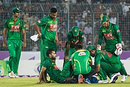

Mashrafe Bin Mortaza (Bengali: মাশরাফি বিন মর্তুজা About this soundpronunciation (help·info); born 5 October 1983) is a Bangladeshi international cricketer and politician who is the former captain in all three formats of the game (Test, Twenty20 and One Day Internationals) for the Bangladesh national cricket team and member of the parliament Jatiya Sangsad from Narail-2. He was ranked as one of the world's most famous athletes by ESPN WORLD FAME 100 in 2019.[8][9] He became only the fifth bowler in the history to take 100 ODI wickets as a captain.[10][11] He is the most successful captain of Bangladesh in ODI and T20I. He is also considered as the best captain of Bangladesh in ODI and T20I. He is the first pace bowler in the Bangladesh cricket history who bowled the quickest delivery clocking 148 km/h during a Test against New Zealand at Hamilton in 2001.[12][13] He broke into the national side in late 2001 against Zimbabwe and represented Bangladesh before having played a single first-class match. Mortaza captained his country in one Test and seven One Day Internationals (ODIs) between 2009 and 2010, however injury meant he was in and out of the side and Shakib Al Hasan was appointed captain in Mortaza's absence. Mortaza used to be considered one of the fastest bowlers produced by Bangladesh, previously bowling in the mid-145s-148s km/h in the 2000s,[12][13][14] and regularly opens the bowling. He is a useful lower-middle order batsman, with a first-class century and three Test half centuries to his name. Mortaza's career has been hampered by fifteen injuries and he has undergone a total of ten operations on his knees and ankles.[15]
Mortaza took temporary exemption from Test cricket in 2009 due to continuous back injuries for indefinite time and have not played any test match since[16] but continued to play in shorter formats. On 4 April 2017, he announced his intentions to retire from T20Is. He retired from all T20Is on 6 April 2017.[17] In December 2018, during Bangladesh's series against the West Indies, Mortaza played in his 200th ODI match. This includes two matches for the Asia XI team.[18] In the same series, he became the first cricketer to play 200 ODIs for Bangladesh[19] and set the record of captaining Bangladesh in most number of ODIs with seventy matches surpassing Habibul Bashar.[19] In March 2020, Mortaza became the first pace bowler and third player for Bangladesh to take 700 wickets in the professional career after Abdur Razzak and Shakib Al Hasan.[20][21][22]
On 4 January 2021, for the first time, Mashrafe Bin Mortaza was dropped from the ODI squad since he made his debut in November 2001. He missed a lot of cricket over the years because of injuries but was never dropped from the team for off form.[23]
Although he had never been involved in politics during his cricket career, Mortaza collected an MP nomination form for 2018 Bangladeshi general election on 11 November 2018 under Awami League's banner.[24] In December 2018, he won a seat in parliament, with 96% of the votes in his constituency, Narail-2.[25] On 20 June 2020, he was reportedly tested positive for COVID-19 and had been kept quarantined at his residence in Dhaka.[26][27][28] On 14 July 2020, he tested negative for COVID-19.[29][30][31]
He was bought by Kolkata Knight Riders for the 2009 Indian Premier League; although KKR paid US$ 600,000 for Mortaza.[32][33][34] He played just one match being not out with 2 runs and giving 58 runs of 4 overs.[35][36]
Due to his international commitments, Mortaza has infrequently played for Khulna Division in Bangladesh's domestic cricket competitions.
Mortaza bowling against India in the 2015 Cricket World Cup
While he has represented Bangladesh 36 times in Tests and in 100 ODIs between 2001 and 2005 he played only 11 first-class and 9 list A matches for Khulna Division in the same period.[37][38]
In March 2018, Mortaza took four wickets in four balls bowling for Abahani Limited against Agrani Bank Cricket Club in the 2017–18 Dhaka Premier Division Cricket League.[39] He took his first List A hat-trick and became the first Bangladeshi bowler to take four wickets in four balls in List A cricket.[39] He finished the 2017–18 Dhaka Premier Division Cricket League as the leading wicket-taker of the tournament, with 39 dismissals in 16 matches.[40]
In 2012 he joined the Dhaka Gladiators and 2015 from Comilla Victorians in the newly formed Bangladesh Premier League twenty20 competition and captained them to the tournament title and led Comilla Victorians clinch the title of the third Bangladesh Premier League (BPL) as well as champion of 2017 Bangladesh Premier League fourth time as captain.[citation needed]In October 2018, he was named in the squad for the Rangpur Riders team, following the draft for the 2018–19 Bangladesh Premier League.[41] He was the leading wicket-taker for the team in the tournament, with 22 dismissals in 14 matches.[42] In November 2019, he was selected to play for the Dhaka Platoon in the 2019–20 Bangladesh Premier League.[43]
Mashrafe was selected for play for Gemcon Khulna in Bangabandu T20 Cup 2020.[44][45][46][47] In the tournament's eliminator ,he took his first five-wicket haul in T20s.[48]

Mortaza was born in the district of Narail in south-west Bangladesh. He enjoyed playing sports such as football and badminton from a young age, and sometimes went swimming in the nearby River Chitra instead of doing school work.[49] He has been described as an open and animated character who enjoys motorcycling. He used to travel from a local bridge onto the tops of passing goods barges. He is very popular in his home town, leading to him being dubbed their "Prince of Hearts".[50] He completed his Secondary School Certificate (SSC) from Narail Government High School in 1999 and his Higher Secondary School Certificate (HSC) from Narail Victoria College in 2001.[51] At Govt. Victoria College, Narail, Mortaza met Sumona Haque Sumi, whom he married in 2006. Both they have a son and daughter.[5] Mortaza got himself admitted into Department of Philosophy at the Jahangirnagar University in 2003-04 for his bachelor's degree. He was more interested in cricket as a youth, especially batting. In spite of this, his bowling is now his main attribute and his pace has gained him the nickname of the "Narail Express".[6]
Mortaza is one of the most successful pace bowlers to have emerged from Bangladesh. The pace and aggression Mortaza displayed as an under-19 player impressed Andy Roberts, the former West Indian fast bowler, who was acting as a temporary bowling coach for Bangladesh.[2] Under Roberts' recommendation, Mortaza was drafted into the Bangladesh A team.[52]
Mortaza appeals for a wicket during the 2015 ICC Cricket World Cup match
After one match for Bangladesh A (to date his only Bangladesh A match), Mortaza made his Test debut on 8 November 2001 against Zimbabwe in the Bangabandhu National Stadium in Dhaka. Khaled Mahmud also debuted in the match, which was curtailed by rain and ended in a draw. Mortaza opened the bowling with Mohammad Manjural Islam and took 4 wickets for 106 runs (also written as 4/106) as Zimbabwe did not bat a second time. His first, also known as "maiden", Test wicket was that of Grant Flower.[53] Unusually the match was also Mortaza's maiden first-class match;[49] he was the 31st person to have achieved this, and the third since 1899.[54] Mortaza also made his first appearance for Bangladesh's one day team on 23 November 2001 along with fellow debutants Fahim Muntasir and Tushar Imran. Opening the bowling with Mohammad Sharif, Mortaza finished with figures of 2/26 from 8.2 overs as Zimbabwe won the match by five wickets.[55]
After the Test series against Zimbabwe and one against New Zealand, Mortaza missed the series against Pakistan in January 2002 as he was suffering from a back injury. While recovering, Mortaza suffered a knee injury while skipping and required an operation. As a result, he was unable to play cricket for a further eight months. At this stage of his career, Mortaza had played four Tests and taken 12 wickets at an average of 31.16.[56]
Mortaza did not return to international cricket until the 2003 World Cup in South Africa during 2003. Bangladesh failed to progress past the round-robin stage,[57] and Mortaza played in two matches collecting two wickets at an average of 38.00.[58][59]
In October and November 2003, England toured Bangladesh for two-Tests and three ODIs.[60] In the second Test, Mortaza took what at the time was his best Test figures of 4/60[61] before succumbing to injury, collapsing with a twisted knee after delivering the ball.[62] Despite challenging England in the series, Bangladesh lost 2–0,[63] Mortaza finished the series with 8 wickets at an average of 21.25.[64] As a result, he was again out of international cricket; this time for over a year. Injuries in the first three years of his international career saw Mortaza only play 12 Tests and not more than four in a row.[65]
Mortaza returned from his career threatening injury and, after impressing in Bangladesh domestic cricket, he was selected in the 13-man squad to face India in a home two-Test series during December 2004.[66] He announced his return to Test cricket in the first Test at Dhaka by dismissing Rahul Dravid. He bowled consistently in the series and nearly dismissed Sachin Tendulkar and Sourav Ganguly, but catches were dropped.[65] Cricinfo noted that in the second Test he "toiled manfully again with wretched back-up".[67] Mortaza finished the series with five wickets at an average of 37.00, although Bangladesh lost 2–0.[68] In the following ODI series, Mortaza played an instrumental role in Bangladesh's 16 run defeat of India in the second ODI on 26 December 2004. He was awarded the man of the match for his all-round performance—taking two wickets, two catches and scoring 31 not out. The match was Bangladesh's 100th ODI and Mortaza's first one-day cricket in 15 months.[69] Bangladesh went on to lose the series 2–1.
Mortaza become man of the match for his all round performance against England in Dhaka
In January 2005 Zimbabwe toured Bangladesh, playing two Tests and five ODIs. Bangladesh won the Test series one Test to nil, their first series victory in Test cricket. In addition, Bangladesh's victory in the first Test at the MA Aziz Stadium was their first Test win. In the final innings of the first match, Mortaza took the ninth wicket and with victory imminent he struggled to bowl the next ball and had to wipe away tears and regain his composure before starting his run up.[70] Despite a sore back in the second Test, Mortaza continued to bowl.[71] In the two Tests, Mortaza scored 93 runs at an average of 31.00 and took nine wickets at an average of 24.88.[72] In a close ODI series, Bangladesh won 3–2 after being 2–0 down,[73] Mortaza played in four matches and took four wickets at an average of 40.00.[74]
Playing for Khulna Division against Sylhet Division in March 2005, Mortaza scored his maiden first-class century. Batting at number four in his team's second innings, Mortaza scored 132 not out from 140 balls; the innings far surpassing his previous best first-class score of 70, and was named man of the match.[75]
Mortaza enhanced his reputation on Bangladesh's inaugural tour of England,[76] and was the team's leading bowler, although his team lost the two-match Test series 2–0. He was by far the most economical of the Bangladeshi bowlers, conceding on average nearly half a run less per over than the next best bowler. Mortaza finished the series with four wickets at 49.50 and was the team's leading wicket taker.[77] He consistently troubled the English batsmen, repeatedly beating the bat.[78] A ODI tri-series followed in which Bangladesh recorded their maiden win against Australia. Mortaza's bowling was important in Bangladesh's huge upset against Australia in Cardiff, removing Adam Gilchrist for a duck and conceding 33 runs from 10 overs as Bangladesh won by five wickets. At the end of the tour, Mortaza was described as "Bangladesh's solitary cutting edge", underlining how important his bowling is to the team.[79]
Mortaza was selected as a reserve player for the Asian squad in the inaugural Afro-Asia Cup. He was later drafted into the full squad as a replacement for the unavailable Rana Naved-ul-Hasan. With batsman Mohammad Ashraful, he was one of two Bangladeshi players in the 15-man squad. Sultan Rana, the Asia team manager, described Mortaza as "a very promising prospect, a terrific asset to the Bangladesh team".[76] He played two of the three ODIs where he took Shaun Pollock's wicket in the first one.[80]
Further injury
In September 2005 a back injury meant that Mortaza had to return home from Bangladesh's tour of Sri Lanka before the start of the first Test. It was the sixth time he had been sent home in the middle of a series. The injury—a type of stress fracture expected to take between six and twelve weeks to heal[81]—saw Mortaza unable to play any cricket for several months.[82] He returned to the Bangladesh side in February 2006 for a series of ODIs against Sri Lanka.[58]
Australia visited Bangladesh in April 2006 and Mortaza played the whole series. Despite coming close to winning the first Test, Bangladesh ultimately lost both Tests in the series. In the final innings of the first Test, Mortaza dropped a difficult catch off Australian captain Ricky Ponting who went on to see his side to victory with 118 not out. Habibul Bashar, the Bangladesh captain, said of the dropped catch, "If he had taken it we could have seen a different situation, but I must say he tried hard and you all know that he is a whole-hearted cricketer".[83] Bangladesh lost the following three-match ODI series 3–0.[84]
In July and August 2006, Bangladesh toured Zimbabwe for a five-match ODI series. In the 3rd ODI, Mortaza was hit for six off the final ball of the match by Brendan Taylor, giving the Zimbabweans victory.[85] With Zimbabwe already winning the series 3–1, Mortaza was dropped for the final match, which Bangladesh went on to win.[86] In the four matches he played in, Mortaza took five wickets at an average of 29.20.[87] Following their defeat by Zimbabwe, Bangladesh faced Kenya in three ODIs, winning them all. Mortaza was instrumental in the second victory, coming in with the score on 120/7 chasing 185 to win. He guided his team home with a 43 not out, farming the strike to protect the Bangladesh tail.[88] Mortaza took career best bowling figures of 6/26 from his 10 overs in the final ODI, ensuring Bangladesh were chasing a low target.[89] His figures are also the best in ODIs by any Bangladesh cricketer.[90] In the calendar year of 2006 Mortaza was the world's highest wicket taker in ODIs, collecting 49 wickets. The haul was the most ever in a calendar year by a Bangladeshi, and 17th most for anyone.[91]
In a freak accident shortly before the 2006 ICC Champions Trophy, Mortaza sprained his ankle on the stairs at home. As a result, he was ruled out of the warm up matches before the tournament which was held on October.[92] Mortaza recovered in time to play in all three of Bangladesh's matches, taking two wickets at 50.50, as Bangladesh failed to progress beyond the first round.[93]
In February 2007, Bangladesh again toured Zimbabwe for a one-day series, this time as a prelude to the 2007 World Cup. Bangladesh won the four match series 3–1,[94] and Mortaza finished as Bangladesh's leading wicket-taker with 8 wickets at 16.50.[95] When Bangladesh beat New Zealand in a warm-up match before the World Cup, Mortaza produced what was described as a "fine all-round display".[96] He took four wickets and scored an unbeaten 30 off 16 balls to ensure victory by two wickets.[96] He was also the man of the match in Bangladesh's victory over India during the group stage of the 2007 World Cup, taking 4/38; at the time they were the best figures by a Bangladesh bowler at a World Cup.[nb 1] Bangladesh progressed to the second round of the tournament, and Mortaza played in all nine of the team's matches, taking nine wickets at an average of 35.88.[98]
Shortly after the World Cup, India toured Bangladesh for two Test matches and three ODIs. Bangladesh lost the Test series 1–0, but Mortaza finished as both the team's leading run-scorer and wicket-taker with 151 runs at 50.33 with two fifties—including his maiden Test half-century—and 6 wickets at 38.33.[99][100] Bangladesh lost the ODI series 2–0. After Habibul Bashar stepped down from Bangladesh's one day captaincy, Mohammad Ashraful was appointed the team captain in all forms of cricket on 2 June 2007. On the same day, it was announced that Mortaza was the new vice-captain.[101] When Bangladesh toured Sri Lanka in June and July 2007, Mortaza took 3 wickets at 91.33 in three Test matches as Bangladesh lost the series 3–0.[102] His poor performance led to suggestions that Mortaza was uninterested in the series; he denied this and put performance down to a lack of confidence and fatigue from an intensive international schedule over the previous two years.[103] He featured in one match of the three-match ODI series; taking two wickets at 15.50 and Bangladesh again lost 3–0.[104]
Mortaza was selected for the Asia squad to play in the 2007 Afro-Asia Cup, a three-match ODI series, replacing Pakistan fast-bowler Shoaib Akhtar. Along with spin bowler Mohammad Rafique, Mortaza was one of two Bangladesh players in the squad.[105] Mortaza played in two of the three matches, taking one wicket at an average of 108 runs as Asia won the series 3–0.[106] At the inaugural World Twenty20, held in South Africa in September 2007, Mortaza took two wickets at 80.00 and scored 35 runs at 8.75 in five matches as Bangladesh progressed to the second stage of the tournament.[107][108] In a match against Australia in the tournament, Mortaza became one of three victims of the first T20I hat-trick. Brett Lee claimed Shakib Al Hasan's wicket, followed by Mortaza's and then that of Alok Kapali to help Australia to a 9-wicket win.[109]
When Bangladesh toured New Zealand in December 2007 and January 2008, the team lost the Test series 2–0 and the ODI series 3–0. Mortaza played in both of the Tests, taking seven wickets at 26.85 and finished as the team's leading wicket-taker.[110] However he was less successful in the ODI series, taking one wicket for 123 runs in three matches.[111] In Bangladesh's two Tests against South Africa in February and March 2008, Mortaza failed to take a single wicket in either match and his team lost 2–0. As a result of his dip in form, Mortaza was dropped for the first match of the three-match ODI series that followed.[112] After Bangladesh lost the opening match of the series, Mortaza returned for the final two ODIs and took one wicket for 45 runs; Bangladesh went on to lose the series 3–0.[113] Ireland toured Bangladesh in March 2008; during the tour Mortaza and two other Bangladesh players faced disciplinary action for missing a practice session.[114] Bangladesh were undefeated in the three-match ODI series, with Mortaza collecting four wickets at 22.75 and a man of the match award.[115]
In August and September 2008, Bangladesh toured Australia for three ODIs. Before the ODIs started, Mortaza was struggling with his persistent knee injury.[116] Bangladesh lost all three matches, and although not missing a match, Mortaza failed to take a wicket.[117] After the series, doctors examined the knee and identified a collection of fluid in Mortaza's left knee. He was told that he can continue bowling for up to a year, but then he will require minor surgery to drain the fluid. The operation would keep him from playing cricket for six to eight weeks.[118] In September 2008, Mortaza was approached by the Indian Cricket League to join the newly formed Dhaka Warriors. The league was not legitimate according to the ICC, whose lead was followed by the Bangladesh Cricket Board (BCB), and the 13 players who chose to join were given 10-year bans by the BCB.[119] Mortaza turned down the offer, asserting that his main priority was to play for Bangladesh.[118]
When New Zealand toured Bangladesh in October 2008, Mortaza was part of Bangladesh's maiden ODI victory against New Zealand. He took 4/44 as his team won by seven wickets,[120] but the team went on to lose the series 2–1. He finished as the series leading wicket-taker.[121] In the two-match Test series which followed, Mortaza took three wickets at an average of 28.33 and scored 92 runs at an average of 30.66 as Bangladesh lost the series 1–0.[122][123]
When Bangladesh toured South Africa in November 2008, Bangladesh lost the two-match and three-match Test and ODI series 2–0 and 3–0 respectively. Mortaza was forced to miss out on Bangladesh's warm up match due to a sore back,[124] but played in all the Tests and ODIs, taking two expensive wickets in each series.[125][126]
On 6 February 2009, an auction was held in which teams in the Indian Premier League made bids for players for the 2009 Indian Premier League, the second season of the competition. Mortaza's starting price was US$50,000; the Kolkata Knight Riders and the Kings XI Punjab were involved in a bidding war over Mortaza, driving up his price. The winning bid was US$600,000 by the Kolkata Knight Riders. Preity Zinta, a stake holder in the Kings XI Punjab team, said "Mortaza is a great player, an all-rounder and we wanted him". Buying Mortaza's was part of the Kolkata Knight Riders' attempt to appeal to a wider audience, including Bangladeshis.[127] Mortaza played just one match for the Kolkata Knight Riders; in the most expensive spell of the 2009 IPL, he bowled the final over of the match, conceding 21 runs to allow the Deccan Chargers to secure victory.[1
In early 2009, Ashraful's position as captain came under scrutiny and the BCB considered possible replacements. Mortaza, wicket-keeper Mushfiqur Rahim, and all-rounder Shakib Al Hasan were identified as potential successors, but the board decided to let Ashraful remain as captain. Mortaza was also reconfirmed as vice-captain.[132] Following Bangladesh's early exit from the 2009 ICC World Twenty20, as a result of their defeat by Ireland, Mohammad Ashfraful's leadership was criticised, but stated that he wished to remain captain.[133] In June 2009, the BCB relieved Ashraful of the captaincy so that he could focus on his batting and Mortaza was appointed captain for the tours of the West Indies and Zimbabwe. Shakib Al Hasan replaced Mortaza as vice-captain.[134]
In July 2009, Bangladesh toured the West Indies. Mortaza's captaincy was off to a winning start in his first Test in charge when Bangladesh beat the West Indies. However, he injured his knee and was unable to take to the field on the final day, leaving Shakib Al Hasan to assume the captaincy and lead the team to a historic win; it was their first against the West Indies, their first overseas Test victory, and only their second Test win.[135] This was achieved against a very inexperienced West Indies side as a result of a dispute between the West Indies Cricket Board and the West Indies Players' Association over pay. The first XI had made themselves unavailable for selection and a new squad had to be chosen. Seven West Indies players made their Test debut in the match and the side was captained by Floyd Reifer who had played the last of his four Tests ten years earlier.[136]
Mortaza's injury prevented him from taking part in the remainder of the tour and his replacement, Shakib Al Hasan, led Bangladesh to a 2–0 and 3–0 victories in the Test and ODI series respectively. The West Indies' dispute remained unsolved for the rest of Bangladesh's tour and the West Indies continued to field an inexperienced side. The knee injury also ruled Mortaza out of playing on the tour of Zimbabwe in August.[137][138] In early August, Mortaza travelled to Australia to undergo arthroscopic surgery on both knees; the expected recovery time from the operation was six weeks.[139][140] Although Mortaza was reinstated as Bangladesh's captain for the team's home ODI series against Zimbabwe in October 2009,[141] he did not play in the series. His injury persisted, and he did not play competitive cricket from his injury in July 2009 until February 2010.
In March 2020, when Zimbabwe toured Bangladesh, prior to the third and final ODI, Mortaza confirmed that he would be stepping down as Bangladesh's ODI captain after the series.[142] Bangladesh won the ODI series 3–0, with Mortaza recording his 50th win in an ODI match as captain with victory in the third match.[143]
Once his knee had recovered, Mortaza suffered another setback when he was prevented playing against New Zealand in February 2010 due to a fever.[144] Mortaza made his comeback from injury in a match for Bangladesh Cricket Board XI against England during their tour of Bangladesh. Following the match, he commented that he had no interest in regaining the captaincy as in his opinion Shakib Al Hasan had done a good job. He also said that if his injury problems persisted he would contemplate retiring from Test cricket to focus on ODIs and T20s, similar to fellow fast bowlers Shane Bond, Shaun Tait, Andrew Flintoff, and Brett Lee.[145]

Mortaza fall down to the ground during his first bowling spell, during match against Afghanistan
Mortaza fall down to the ground during his first bowling spell, during match against Afghanistan
Mortaza declined to play in the Test series to avoid aggravating his knee injury, but played only the first out of the three ODIs against England before withdrawing from Bangladesh's squad as he was about to be dropped.[146][147] Bangladesh lost the one match Mortaza played in, and the captain criticised his bowling. Shakib Al Hasan said "The way Mashrafe bowled before his injury, that Mashrafe we might have missed tonight. But the way he bowled in the last match and the practice match, not really. He needs some time to get back to full confidence and rhythm. He needs to play some games and get match-fit again."[147]
Mortaza continued to struggle for form in the 2010 Asia Cup, held in June, taking just two wickets in three matches at an average of 77.00. The coach, Jamie Siddons, commented that "He's going to have to improve a lot on his current form. Unfortunately there's no ready replacement for Mashrafe at the moment, we're hoping his experience will pull him through. We'll keep looking for others and if Mash can't stand up we'll have to replace him."[147] Siddons also noted that since his comeback in 2010, Mortaza's bowling has not been as fast as it used to be.[148] In the one-day leg of the return tour in England in July 2010, Mortaza regain the captaincy of the ODI side.[147] He took over from Shakib Al Hasan who had stepped down after a dip in form.[148] In the second ODI Bangladesh ended their 24-match losing streak;[149] Mortaza led his country to their first victory over England in any form of cricket.[150] However, Bangladesh were unable to seal a series victory and lost 2–1. Mortaza finished as joint-lead wicket-taker for the series with five wickets, equal with England's Ajmal Shahzad.[151] Later the same month, Bangladesh played two ODIs against Ireland, and one against the Netherlands; the team managed only one victory against Ireland. Analysing Bangladesh's performance on the tour, Mortaza noted his concern about the effectiveness of the team's bowling.[152]
In the opening game of Bangladesh's five-match ODI series against New Zealand in October 2010, Mortaza suffered an ankle injury. As a result, he was unable to play again in the series and Shakib Al Hasan took over.[153] Bangladesh won 4–0,[154] a historic win as Bangladesh had never before won a series against a full-strength Test nation.[155] At the start of November, the BCB announced 16 central contracts. Mortaza was one of six players in the top level.[156] He returned to the Bangladesh squad for Zimbabwe's tour of the country in December 2010, but Shakib Al Hasan retained the captaincy.[157] By his own admission, Mortaza struggled for form early in the series but believed that he would improve with match practice.[158] After losing the opening match of the series, Bangladesh won the next three encounters and beat Zimbabwe 3–1;[159] Mortaza finished with three wickets from four matches at an average of 32.66.[160] At the end of the series Shakib praised the performance of his fast bowlers in the closing matches.[159] While batting for Abahani in a Dhaka Premier Division League match in December, Mortaza suffered a tear of his knee ligament.[161] When the injury meant he was omitted from Bangladesh's 15-man squad for the 2011 World Cup in February, Mortaza said that it was "the most painful day" of his life.[162] He hoped to recover in time, and when it was announced that Mortaza had not been included in the World Cup squad there was rioting in Bangladesh and in one place a half-day strike.[163]
Mortaza was recalled to the squad to face Australia in three ODIs in April.[164] He finished as the team's leading wicket-taker with five wickets at an average of 29.00 from two matches, however he conceded runs at more than eight an over, the second highest in the series of those who had bowled at least ten over.[165] Bangladesh lost the series 3–0 and in the third match, Mortaza took his 150th ODI wicket with the dismissal of Callum Ferguson.[166] The knee injury incurred in December required surgery which was deferred until May; the operation left him unable to play cricket until at least October.[167]
The Bangladesh Cricket Board founded the six-team Bangladesh Premier League in 2012, a twenty20 tournament to be held in February that year.[168] An auction was held for teams to buy players,[169] and Mortaza was bought by the Dhaka Gladiators for $45,000.[170] On his return to competitive cricket Mortaza was made captain of Dhaka Gladiators. Before the tournament had started, he reported to have been approached with a request to participate in spot-fixing.[171] Led by Mortaza, who took ten wickets from eleven matches,[172] Dhaka won the BPL's inaugural season.[173] Shortly after the tournament concluded, Bangladesh hosted the 2012 Asia Cup; after losing to Pakistan the previous December, five new players called into Bangladesh's 15-man squad, including Mortaza who was making his come back to the national side after injury.[174] When the BCB announced its central contracts for 2012 in March, Mortaza retained his top level contract.[175] Against expectations Bangladesh progressed to the cup final against Pakistan; it was just the second time Bangladesh had reached the final of a tournament. Though he had played in the BPL, bowling ten overs in the ODIs as opposed to just four per match proved to be a challenge for Mortaza. Though in the penultimate game he struggled he regained full fitness to bowl in the final,[176] and finished as Bangladesh's leading seamer with six wickets from four matches.[177]
In April 2019, he was named as the captain of Bangladesh's squad for the 2019 Cricket World Cup.[178][179] But it was a horrible World Cup for Mortaza as he only took one wicket bowling 336 balls in the World Cup
On 4 January 2021,he was dropped for the first time from the ODI squad since making his debut in November 2001, though he has missed a lot of cricket over the years because of injuries.[181]
Pitches in Bangladesh are generally slow and suit spin bowling; the domestic circuit is dominated by spin bowlers and former Bangladesh coach Jamie Siddons suggested the pitches discourages the emergence of fast bowlers.[182] Despite this in April 2008 Mortaza became the second Bangladesh bowler to take 100 wickets in ODIs and the first fast bowler from the team to pass the landmark.[183] For a long time Mortaza was acclaimed as the fastest bowler that Bangladesh had produced, before the arrival of Rubel Hossain.[184]
Mortaza uses his aggressive bowling to challenge batsmen.[56] Although a naturally aggressive player, his accurate bowling has led to comparisons with Australian fast-bowler Glenn McGrath.[65] He has been described by commentators as having "a strong sturdy physic ... sheer pace and stamina with an aggressive frame of mind".[52] After his knee injury, Mortaza was forced to alter his bowling action slightly, and lost some pace. He has tried to develop his use of reverse swing in an attempt to become a more effective bowler.[103]
Jamie Siddons, the Bangladesh coach, has stated that he believes Mortaza does not get the bowling figures he deserves because "opposing teams tend to see him off and then attack the others".[185] Mortaza has also commented that "it always puts pressure on the bowlers when their side is bowled out cheaply in the first innings", something that the Bangladesh batting line-up has sometimes struggled with.[103]
Although primarily a bowler, Mortaza is an aggressive batsman as demonstrated by his high Test match strike rate of 67.25. He holds Bangladeshi records for highest strike rate in Tests and ODIs, and for scoring the most runs in an ODI over (26 runs including four sixes).[186][187] Mortaza's batting is characterised by a reluctance to get in line with the bowling and he prefers to take a step towards square leg to facilitate his powerful shots.[188] He has suffered a plethora of injuries, in his own words from 2007: "Left knee, three operations; right knee, one operation; back, stress fracture—it's better now but still gives some trouble—some shoulder problems; ankles, damaged ligaments twice".[184] Since then he has suffered further injury, and in total has undergone four surgeries on his left knee and three on his right, and three on his ankles.[176]
hough Mortaza has not retired from Test cricket, he was forced to quit playing Test matches after he injured his right leg while captaining the side for the first time in 2009 against West Indies. Since then, he has not represented his country in any test matches. Considering his injuries and several surgeries, BCB has not allowed him to play in the longer format.[189]
On 4 April 2017, Mortaza announced his retirement from Twenty20 internationals after the tour of Sri Lanaka.[190] He played his last T20I on 6 April 2017 against Sri Lanka at the R. Premadas
In March 2020, when Zimbabwe toured Bangladesh, ahead of the tour, the BCB announced that it would be Mortaza's last series as captain of the ODI team.[192] Prior to the third ODI, Mortaza confirmed that he would be stepping down as Bangladesh's ODI captain after the series.[142]
Although he had never been involved in politics during his cricket career, Mortaza collected a parliamentary candidature form for 2018 Bangladeshi general election on 11 November 2018 under Awami League's banner.[193] He contested in the election from Narail-2 constituency and after the declaration of results he eventually won the seat by a huge margin by 2,71,210 votes from his rival.[194][195]
In February 2019, he has become member of the Parliamentary Standing Committee on Youth and Sports Ministry of the eleventh Jatiya Sangsad.[196][197]
2010 - National Sports Awards, by the Government of Bangladesh in recognition of his outstanding achievement in sports.[198]